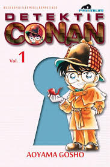
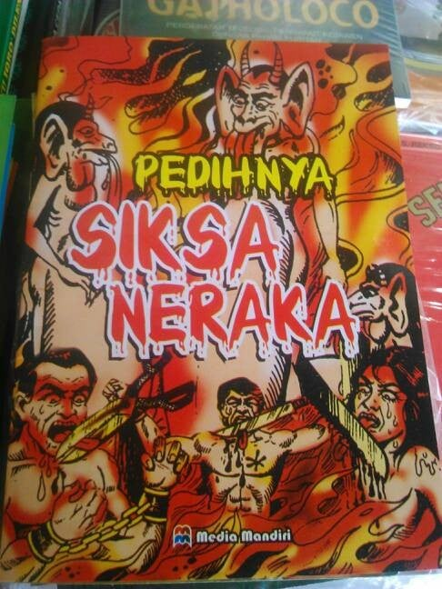
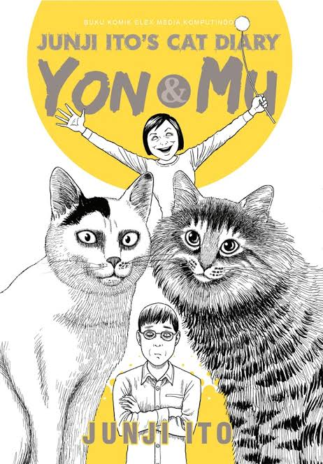
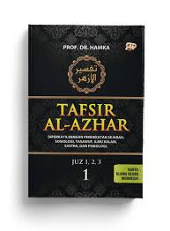

| No | Nama Buku | Gambar | Deskripsi | Stok | Harga Jual |
| 1 | KOMIK DETEKTIF CONAN |  | seri manga detektif Jepang yang ditulis dan diilustrasikan oleh Gosho Aoyama. | 200 lusin | Rp 42.000,00 |
| 2 | Komik Siksa Neraka |  | Siksa Neraka ditulis MB Rahimsyah mengacu pada legenda perjalanan Nabi Muhammad SAW pada saat Isra Mikraj, yakni ketika Nabi diperlihatkan bentuk surga dan isi dari neraka | 342 lusin | Rp 15.000,00 |
| 3 | Komik Junji Ito Cat Yo and Mu |  | Junji Ito terkenal dengan karya manga yang ber-genre horor. Dengan gaya penulisan dan ilustrasi manga-nya yang unik dan mengerikan/td> | 300 lusin | Rp 20.000,00 |
| 4 | Kitab Tafsir Al Azhar |  | Tafsir Al-Azhar ini salah satu tafsir yang mengambil corak Adabi Ijtimai, yakni pemikiran keberbagai permasalahan yang berkaitan dengan kandungan ayat yang ditafsirkan | 2000 lusin | Rp 50.000,00 |